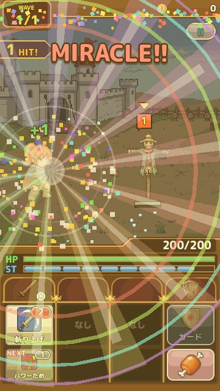

難易度 5 段階のちがい
イージーからルナティックまで、被ダメージ・ミラクルの回復・ガードの受付がどう変わるかを、フレームと秒の表で比べました。 更新：2026-11-23
難易度で変わること・変わらないこと
難易度はゲームを始めるときに選び、あとから地図の下の「その他」→「難易度」でいつでも変えられます。変えても持ち物や進み具合はそのままです。
難易度で変わるのは、次の 3 つだけです。
- 被ダメージ：敵から受けるダメージの倍率（ボスの必殺技も同じ倍率）
- ミラクルの回復：ミラクルガードで回復する HP の倍率
- ガードの受付：ガード・ジャスト・ミラクルになる時間の長さ（海底と天空の押し始めの受付も）
反対に、敵の HP や攻撃のしかた、宝箱から出る品、コインの量、ジャストガードで回復する ST（2）、ミラクルで ST が満タンになることは、どの難易度でも同じです。イージーで遊んでも損をすることはありません。チュートリアルとカカシも今の難易度の受付で動くので、難易度を変えたらカカシで新しい受付を体で確かめておくと安心です。

5 つの難易度の一覧
| 難易度 | 被ダメージ | ミラクルの回復 | ガード | ジャスト | ミラクル | 海底・天空の押し始め |
|---|---|---|---|---|---|---|
| イージー | 0.8 倍 | 2 倍（HP 20） | 35 | 7 | 5 | 14 |
| ノーマル | 0.9 倍 | 1.5 倍（HP 15） | 30 | 6 | 4 | 12 |
| ハード | 0.95 倍 | 1 倍（HP 10） | 25 | 5 | 3 | 10 |
| エクストラ | 1 倍 | 1 倍（HP 10） | 20 | 4 | 2 | 8 |
| ルナティック | 1 倍 | 1 倍（HP 10） | 15 | 3 | 1 | 6 |
ガード・ジャスト・ミラクル・押し始めの数字は受付の長さで、単位はフレーム（1 秒 = 60 フレーム）です。ミラクルの回復の HP は基本の量（10）に倍率をかけたもので、盾の効果でさらに増えることがあります。
ガードの数字は「盾を構えている長さ」です。その中の、判定の瞬間にいちばん近い部分がミラクル、その少し前がジャスト、残りがふつうのガードになります。海底のホールドガードと天空のスワイプガードの押し始めは、ジャストの 2 倍の長さで、そこにはジャストやミラクルの段はありません。
受付をタイミングで比べる
上の表を「判定の瞬間の何フレーム前に押せばいいか」に直すと、次のようになります。ガードの受付より前に押すと、当たる前に構えが解けてしまいます。
| 難易度 | ミラクル | ジャスト | ガード | これより早いと失敗（「!!」から） |
|---|---|---|---|---|
| イージー | 0〜4 前 | 5〜11 前 | 12〜34 前 | 約 0.47 秒 |
| ノーマル | 0〜3 前 | 4〜9 前 | 10〜29 前 | 約 0.55 秒 |
| ハード | 0〜2 前 | 3〜7 前 | 8〜24 前 | 約 0.63 秒 |
| エクストラ | 0〜1 前 | 2〜5 前 | 6〜19 前 | 約 0.72 秒 |
| ルナティック | 0 前だけ | 1〜3 前 | 4〜14 前 | 約 0.8 秒 |
右の列は、地上のふつうの攻撃で「!!」が出てから何秒たてば押してもよいかの目安です（「!!」から判定までは約 1 秒。設定の「ガードのタイミング」がふつうの 4 のとき）。難易度が上がるほど、「!!」を見てからじっと待つ時間が長くなり、早押しが許されなくなっていくのがわかります。
ノーマルのジャストは 6 フレーム、つまり 0.1 秒あるので、敵の動きをよく見ていれば十分に決められます。ルナティックのミラクルは 1 フレーム、判定の瞬間ちょうどでしか決まりません。ここまでくると、指の感覚だけでなく、機種ごとの表示の遅れまで含めた勝負になります。
地底・海底・天空での難易度
地上のあとの 3 つの世界でも、難易度の表はそのまま使われます。ただ、ガードの操作がちがうので、効き方も少しずつちがいます。
- 地底（フリックガード）：ボタンを向きに合わせてはじく操作ですが、受付の長さは地上と同じ表です。はじく指の動きの分だけ、向きのある攻撃は当たるのがほんの少し（2 フレーム）遅らせてあります
- 海底（ホールドガード）：攻撃の始まりに押す「押し始め」は、表のいちばん右の列の長さです。ノーマルで 12 フレーム（0.2 秒）、ルナティックで 6 フレーム（0.1 秒）。押し始めにはジャストやミラクルの段がなく、間に合えば受け止め、間に合わなければその段は全部当たります。ジャストやミラクルを決めるのは、離す瞬間のほうです
- 天空（スワイプガード）：最初の左スワイプの押しこみも、海底と同じ押し始めの長さです。稲妻（⚡）の攻撃でたたく回数（6 回でガード・9 回でジャスト・12 回でミラクル）は、難易度で変わりません
海底と天空は、1 回の攻撃の中で判定が何度もある分、受付が 2 フレーム短くなるだけでも難しさが大きく変わります。地上をハードで遊んでいる人も、新しい世界に入ったときはいったんノーマルにして、操作に慣れてから上げるのがおすすめです。

被ダメージの差を数字で見る
敵の攻撃の強さが 100 のとき、受けるダメージは次のようになります（防御力 10 の盾で、ふつうのガードは 50% 減る場合）。
| 難易度 | ガードなし | ガード | ジャスト | ミラクル |
|---|---|---|---|---|
| イージー | 80 | 40 | 8 | 0（HP +20） |
| ノーマル | 90 | 45 | 9 | 0（HP +15） |
| ハード | 95 | 47 | 9 | 0（HP +10） |
| エクストラ | 100 | 50 | 10 | 0（HP +10） |
| ルナティック | 100 | 50 | 10 | 0（HP +10） |
被ダメージの差は最大でも 2 割ですが、ジャストを決めれば差はわずか数ポイントになります。むしろ大きいのは受付の長さのちがいです。イージーとルナティックでは、ガードの受付が 35 と 15 で 2 倍以上ちがい、ガードを外す回数そのものが変わります。「敵が痛い」と感じたら、被ダメージより先に、受付の広い難易度でガードを外さないことを考えるのが近道です。
どの難易度を選べばいい？
- イージー：アクションが苦手な人、お話や装備集めをのんびり楽しみたい人。ミラクルの回復が 2 倍なので、HP が減ってもミラクル 1 回で立て直しやすくなります
- ノーマル：はじめての人の基本。ジャストの 0.1 秒を「!!」を見てから合わせる練習に、ちょうどいい広さです
- ハード：ノーマルでジャストが安定してきた人。ミラクルの回復が 1 倍になるので、ジャストで ST を回しながら戦う力が試されます
- エクストラ：被ダメージの軽減がなくなります。ガードの受付は 20 フレームと短く、早押しのくせがあると外れが目立ちます
- ルナティック：腕だめし。ガードは 15 フレーム、ミラクルは 1 フレームです
プロフィールの討伐の記録には、そのとき遊んでいた難易度が色のついた札で残ります（ルナティックは紫、エクストラはえんじ、ハードは茶、ノーマルは青、イージーは緑）。初めて倒したときの記録とは別に、2 回目からの記録は倒すたびに書きかわるので、難易度を上げて倒し直すと札の色も変わります。

切りかえて遊ぶコツ
難易度は戦いの外ならいつでも変えられるので、場面に合わせて使い分けるのがおすすめです。
- ふだんはノーマルで進める
- どうしても勝てないボスの STAGE だけイージーにして、勝ったらノーマルにもどす
- 新しい世界に入ったら、まずカカシをノーマルで受けて、新しいガードの操作に慣れてから本番へ
- 慣れてきたら、クリアずみの STAGE をハードで遊び直して、ジャストの精度を上げる
ひとつ例外があります。蜃気楼のダンジョンの中だけは、設定の難易度にかかわらず、いつもルナティックの受付になります（「その他」で選んでいる難易度そのものは変わりません）。蜃気楼に挑む前に、ルナティックでカカシを受けて慣れておくとよいでしょう。くわしくは 蜃気楼のページ を見てください。
高い難易度に挑む人へ
ハード以上に上げるときは、次の準備をしておくと失敗が減ります。
- ガードのタイミングを合わせ直す：受付がせまくなるほど、機種の遅れの影響が大きくなります。「その他」→「設定」の「ガードのタイミング」を、カカシで受けながら 1 つずつ合わせます（ガードの極意）
- ジャストで ST を回す戦い方にする：ミラクルの回復が 1 倍になるので、HP を減らさないことが何より大事です。ST の重いスキルばかりにせず、ジャスト 1 回分（ST 2）で使えるスキルを混ぜておくと、ガードを外しても立て直せます
- ガーディアンの盾を使う：ジャストガードの受付を 1.2 倍に広げる効果で、ミラクルとジャストを合わせた受付が、ルナティックなら 4 フレームから 5 フレームに、ノーマルなら 10 フレームから 12 フレームになります
- スタンで攻撃の回数を減らす：スタン中の敵は攻撃してこないので、受ける回数そのものが減ります（弱点とスタンのしくみ）